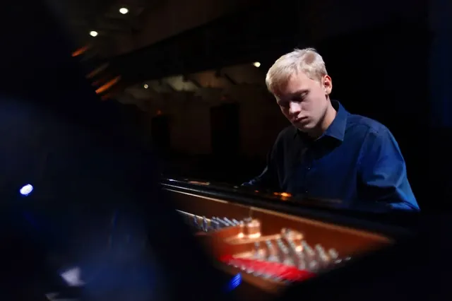
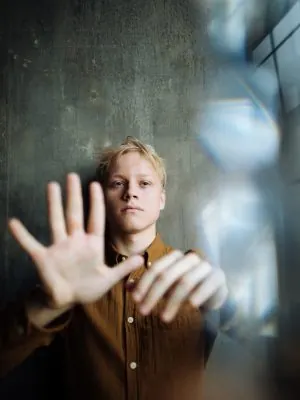

Nieuws ·
Alexander Malofeev Schittert in Kamermuziek Nijmegen Concertserie

Het podium van De Vereeniging in Nijmegen verwelkomt op maandag 15 januari een muzikaal fenomeen: de jonge en getalenteerde pianist Alexander Malofeev. Dit recital maakt deel uit van de prestigieuze Kamermuziek Nijmegen-concertserie, zorgvuldig samengesteld door de Nijmeegse Stichting voor Kamermuziek (NSvK). Het concert start om 20.15 uur, en meer details zijn te vinden op www.kamermuzieknijmegen.nl.
Alexander Malofeev, bekend om zijn uitzonderlijke muzikaliteit en expressieve speelstijl, is hard op weg om een van de meest opmerkelijke pianisten van zijn generatie te worden. Zijn vermogen om verhalen te vertellen door middel van muziek is ronduit betoverend. Malofeev, die bekend staat om zijn lyrische en dromerige uitvoeringen, maar ook om zijn krachtige en intense spel, heeft al opgetreden met wereldberoemde orkesten in prestigieuze concertzalen over de hele wereld.
Tijdens het concert voor de pauze neemt Malofeev het publiek mee op een reis door de barokperiode, met werken oorspronkelijk gecomponeerd voor andere instrumenten door meesters als Händel, Purcell, Muffat en Bach. Na de pauze staat laatromantische muziek van de pianist-componisten Skrjabin en Rachmaninov op het programma.
Het 74e seizoen van Kamermuziek Nijmegen is nu halverwege en biedt nog steeds de kans om een abonnement te kopen voor de resterende concerten. Een abonnement, dat toegang geeft tot vier concerten van internationale topmusici, is nu verkrijgbaar voor slechts €90. Abonnementen zijn beschikbaar op de NSvK website en bij Boekhandel Roelants in het centrum van Nijmegen.

Mis deze uitzonderlijke gelegenheid niet om Alexander Malofeev live te ervaren in De Vereeniging, een avond die belooft een showcase te zijn van uitzonderlijk pianotalent en muzikale expressie.